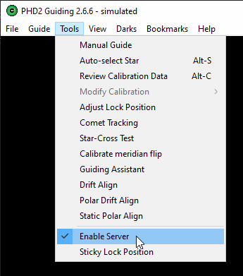
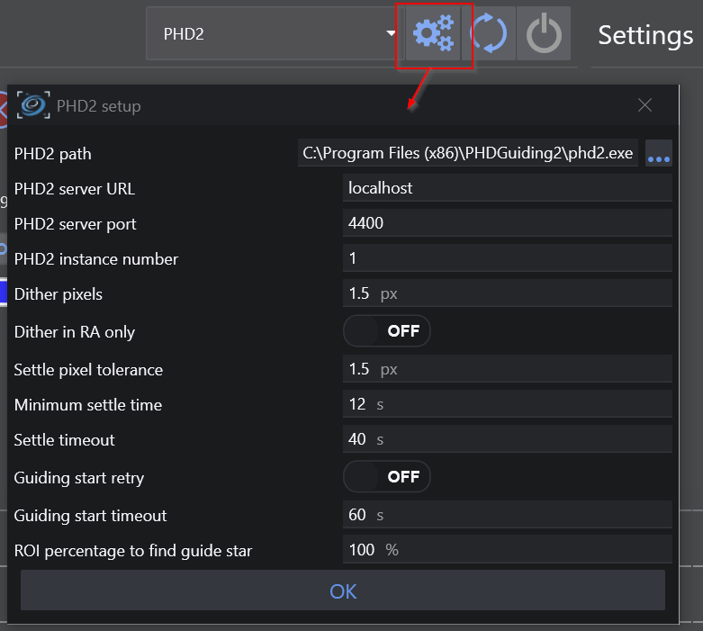
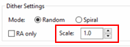
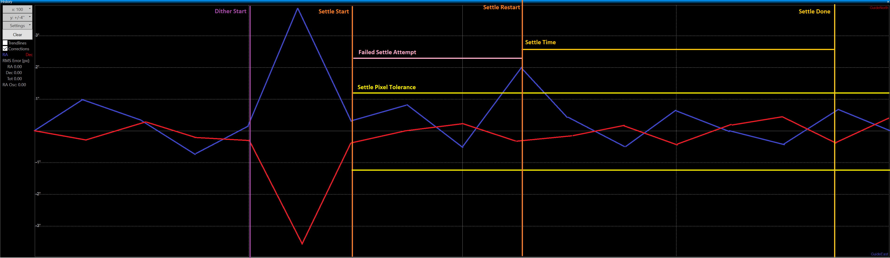
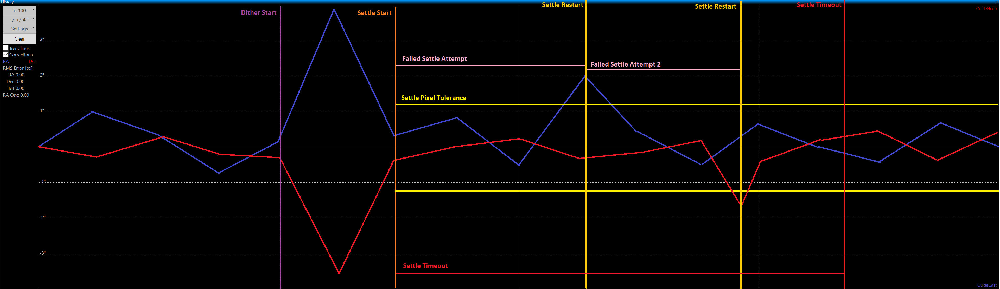
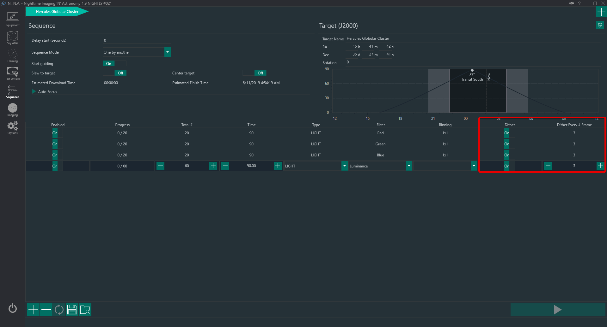

Dithering
Overview#
Dithering is an important part of the modern image acquisition process. CMOS and CCD sensors suffer from various types of electronic noise, such as fixed-pattern noise, and defects such hot and cold pixels. Photons of light from stellar objects fall onto the sensor and will effectively be lost if the photon falls on a dead or hot pixel. The act of dithering is a commanded move of the mount between successive exposures that very slightly alters, on the pixel scale, where photons fall on the sensor. This means that one exposure can capture light (ie, data) from an object where that same light fell on a dead or hot pixel in the previous exposure. Image alignment issues are easily handled by most astronomy stacking and image post-processing applications. The different positions of single light frames will make it more effective for image integration algorithm that implement an outlier rejection method (like sigma-clipping) to reject fixed-pattern noise ans well as hot and cold pixels. This is because hot and cold pixels are always in the same position in the camera sensor and dither will make them appear in different places for each frame after a dither move.
Because dithering is an operation that must be coordinated with guiding (remember, the mount is being purposefully moved by a few pixels, which guiding would reflexively attempt to counteract), the dithering operation is managed by the guiding applications themselves. The process is simple. N.I.N.A. suspends imaging and commands the guiding application to execute a dither operation. It performs the dither, and then informs N.I.N.A. when the operation is complete. Any required adjustments to guiding are automatically handled by the guiding application. N.I.N.A. then resumes commanding normal exposures. Normally, a dither operation takes a few tens of seconds (at most) to complete.
Dithering in N.I.N.A.#
N.I.N.A. offers three different ways to perform dithering:
- Standard dithering through PHD2, MGEN2, or MetaGuide
- Built-in dithering using N.I.N.A.'s Mount Dither function
The desired way of dithering is based on the connected device in the Equipment > Guider tab.
Standard Dithering#
This is the typical scenario for most users. The user has a single main camera, a guide camera, and a supported guiding application. At the intervals configured in the sequence, N.I.N.A. will pause operations with the main camera and trigger a dither operation. Photography resumes when the dither operation is completed.
Built-in Dithering#
There are some cases where guiding equipment isn't needed or available, but you still want to dither. This can happen if you have a very high end mount with encoders or with small portable setups. N.I.N.A. can perform dithers directly via its Mount Dither which manually slews the telescope very small distances.
Requirements#
N.I.N.A. supports dithering using its direct communication with PHD2 and makes it easy to set up as a part of a sequence. There are a few prerequisites to dither during a sequence:
- A mount needs to be connected
- A supported guiding application needs to be be running, actively guiding, and also communicating with N.I.N.A.
- PHD2
- MGEN2
- MetaGuide
- The guiding-related settings in the Equipment Settings need to be correctly set up
- If you need dithering, it should be enabled in the sequence
PHD2 Settings#
In order for N.I.N.A. to communicate with PHD2 and command operations such as dithering and for receiving guiding telemetry, PHD2's internal server must be enabled. To enable PHD2's internal server, go to PHD2's Tools menu and ensure that Enable Server is selected.

N.I.N.A Settings#
Settings for PHD2#
Settings related to guiding and dithering can be found in the Equipment > Guider tab by clicking on the ⚙️ Gears button. The defaults are suitable for most cases. You will need to specify the full path to phd2.exe if PHD2 was installed in a non-standard location. This is so N.I.N.A. can automatically start PHD2 as a part of the equipment connection process.

An explanation of the two most important dithering-related settings follows:
- PHD2 Dither Pixels: The amount of pixels (on the guiding camera) that the dithering action will shift. This value should take into account the guiding imaging scale and main camera imaging scale, in arcsec/pixels. To select the appropriate value you need to consider how many imaging camera pixels will shift between two exposures as a consequence of a dither move. Obviously, 2 pixels at one focal length and pixel size will cover a different amount of sky than another setup with a different focal length and pixel size. It is usually recommended to dither a number of guide camera pixels that will shift the main imaging camera of about 10 pixels.
Tip
Let's assume to have a guide camera with a pixel size of 3.8µm and a 260mm focal length guide scope, resulting in a guide scale of about 3 arcsec/pixel. The imaging optical train is composed by a camera with a pixel size of 3.8µm and a 520mm focal length scope, resulting in an imaging scale of about 1.5 arcsec/pixel. A guide camera shift of 5 pixels corresponds to a motion of 15 arcsec or 10 pixels of shift for the main imaging camera. In this case a PHD2 Dither Pixels of 5 pixels is therefore appropriate.
Note
The PHD2 Dither Pixel value will be multiplied by PHD2 by the "Scale" value found under Advance Setup>Dither Settings of PHD2. This value will be multiplied by the Dither Pixel set in N.I.N.A. to determine the final pixel shift amount. It is recommended to leave it at 1 and only change the amount of dither pixels in N.I.N.A.

- Dither RA Only: This will cause dithering to happen on the RA axis only and allow the declination axis to continue guiding.
Note
This option should only be checked in the following cases:
- your mount does not support DEC guiding (i.e. skytracker)
- a mount that suffers from a high declination backlash
- you are guiding in one direction only in DEC
Tip
The pixel scale of your guide camera can be calculated using online tools. By inputting the focal length of your guiding optical train and the pixel size of your guide camera's sensor, you will know how many arcseconds of sky is covered by each pixel (arcseconds per pixel). Such a tool is the CCD Resolution Calculator.
- Dither Settle Pixel Tolerance and Settle Time: these are important parameters that define the successful end of a dither move. When a dither is initiated by PHD2 a random move of the mount in RA/DEC is issued, the maximum amount of the random move is defined by PHD2 Dither Pixels. The mount then resumes its tracking operations, but depending on the mechanical stability of the gears it might take a couple of seconds to return to its normal guiding conditions. This time represents the settle time and N.I.N.A. lets you define a Minimum Settle Time during which the mount has to be inside the pixel tolerance. If the mount is moving outside this tolerance during this time frame, the minimum settle time timer will restart again.
The successful completion of a dither settling is achieved when guiding after a dither move remains within the tolerance defined by the PHD2 Settle Pixel Tolerance expressed in guide camera pixels. Once settling is complete N.I.N.A. can continue and start a new capture.
Should settling not be achieved after the period defined in PHD2 Settle Timeout, the settling will be declared failed and N.I.N.A. will start a new capture.
PHD2 Dither Pixels depend on your mount guiding capabilities and guiding scale and should be determined by looking at PHD2 logs. A great tool to analyze PHD2 logs is PHD2 Log Viewer that can be downloaded from here
** Example of a successful dither after one failed settle attempt **

** Example of a failed settle due to timeout **
Settings in Sequences#
Regardless of the dither method in use, initiating dithering during the course of a running sequence is simple. Dithering operations can be activated for each step in a sequence, and be initiated every Nth frame in each step. That is, if a step in a sequence specifies that 20 exposures be taken with a dither operation every second exposure, two normal exposures will be taken, a dither operation performed, and then the next two exposures will be taken, etc. N.I.N.A. manages these operations itself in conjunction with PHD2 and the process is entirely hands-off.

Dithering operations happen while the previous image is downloading from the camera. If you have a camera with slow download speeds, it might be that the dithering operation is completed in time for the camera to be ready for the next exposure.